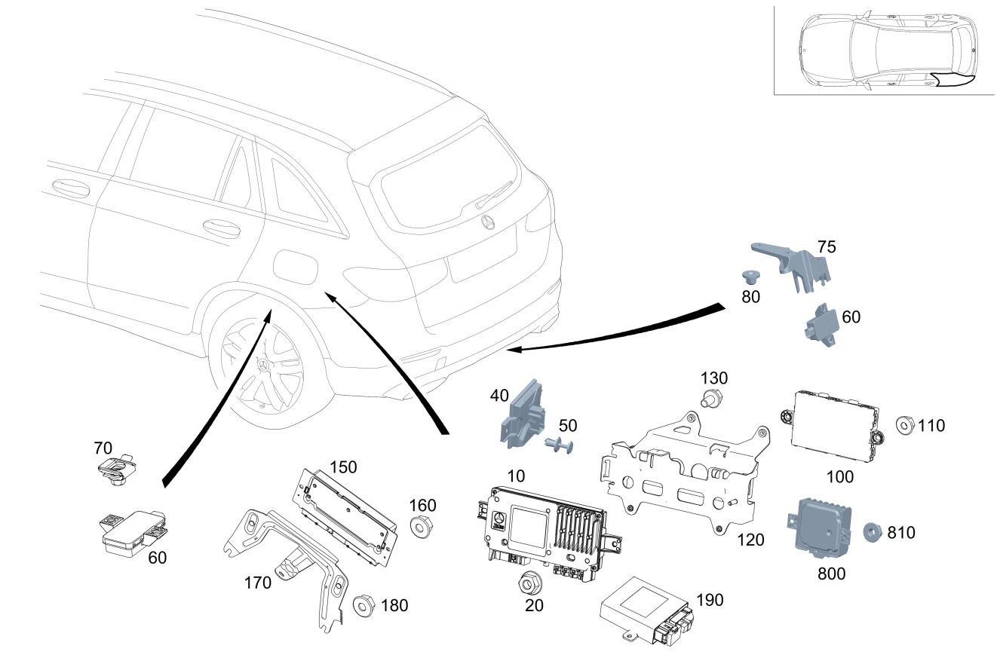

| № | Артикул | Название | Кол. | Примечание | Ограничение |
|---|---|---|---|---|---|
| 10 | A 205 900 15 19 | Блок управления (CONTROL UNIT) | 1 | Система кругового обзора [672] ДЕТАЛЬ ПОСЛЕ УСТАН.ПРОВЕРИТЬ НА АКТУАЛЬНОСТЬ "ПРОШИВНОГО" ПО | 501 |
| 10 | A 205 900 12 22 | Блок управления (CONTROL UNIT) | 1 | Система кругового обзора [672] ДЕТАЛЬ ПОСЛЕ УСТАН.ПРОВЕРИТЬ НА АКТУАЛЬНОСТЬ "ПРОШИВНОГО" ПО | 807+501 |
| 10 | A 205 900 12 22 | Блок управления (CONTROL UNIT) | 1 | Система кругового обзора [672] ДЕТАЛЬ ПОСЛЕ УСТАН.ПРОВЕРИТЬ НА АКТУАЛЬНОСТЬ "ПРОШИВНОГО" ПО | 501 |
| 10 | A 205 900 26 29 | Блок управления (CONTROL UNIT) | 1 | Система кругового обзора [672] ДЕТАЛЬ ПОСЛЕ УСТАН.ПРОВЕРИТЬ НА АКТУАЛЬНОСТЬ "ПРОШИВНОГО" ПО | 501 |
| 20 | A 000 990 43 37 | Шестигранная гайка (HEXAGON NUT) | 1 | Крепление блока управления; M6 | 501 |
| 20 | A 000 990 43 37 | Шестигранная гайка (HEXAGON NUT) | 1 | Крепление блока управления; M6 | 235 |
| 20 | N 000000 008290 | Шестигранная гайка (HEXAGON NUT) | 1 | Крепление блока управления; M6 | 235 |
| 40 | A 222 900 09 05 | Блок управления (CONTROL UNIT) | 1 | Защита камеры от грязи [672] ДЕТАЛЬ ПОСЛЕ УСТАН.ПРОВЕРИТЬ НА АКТУАЛЬНОСТЬ "ПРОШИВНОГО" ПО | 218/501 |
| 40 | A 222 900 56 13 | Блок управления (CONTROL UNIT) | 1 | Защита камеры от грязи [672] ДЕТАЛЬ ПОСЛЕ УСТАН.ПРОВЕРИТЬ НА АКТУАЛЬНОСТЬ "ПРОШИВНОГО" ПО | 218/501 |
| 40 | A 222 900 85 22 | Блок управления (CONTROL UNIT) | 1 | Защита камеры от грязи [672] ДЕТАЛЬ ПОСЛЕ УСТАН.ПРОВЕРИТЬ НА АКТУАЛЬНОСТЬ "ПРОШИВНОГО" ПО | 218/501 |
| 50 | A 000 991 93 40 | Распорная заклепка (EXPANSION RIVET) | 2 | Крепление блока управления | 218/501 |
| 60 | A 000 900 69 07 | Блок управления (CONTROL UNIT) | 1 | Система контроля давления в шинах (RDK) [672] ДЕТАЛЬ ПОСЛЕ УСТАН.ПРОВЕРИТЬ НА АКТУАЛЬНОСТЬ "ПРОШИВНОГО" ПО [697] ДЕТАЛЬ ПОСТАВЛЯЕТСЯ ТОЛЬКО/ИЛИ ТАКЖЕ КАК ЗАП.ЧАСТЬ | 475 |
| 60 | A 000 900 37 13 | Блок управления (CONTROL UNIT) | 1 | Система контроля давления в шинах (RDK) [672] ДЕТАЛЬ ПОСЛЕ УСТАН.ПРОВЕРИТЬ НА АКТУАЛЬНОСТЬ "ПРОШИВНОГО" ПО [697] ДЕТАЛЬ ПОСТАВЛЯЕТСЯ ТОЛЬКО/ИЛИ ТАКЖЕ КАК ЗАП.ЧАСТЬ | 475 |
| 60 | A 000 900 38 13 | Блок управления (CONTROL UNIT) | 1 | Система контроля давления в шинах (RDK) [672] ДЕТАЛЬ ПОСЛЕ УСТАН.ПРОВЕРИТЬ НА АКТУАЛЬНОСТЬ "ПРОШИВНОГО" ПО | 475+498 |
| 70 | A 001 990 32 56 | Пружинная гайка (CLIP-TYPE NUT) | 2 | Крепление блока управления; T5 | 475+-9O1 |
| 75 | A 217 545 02 00 | Держатель (HOLDER) | 1 | Блок управления системы контроля давления в шинах | 475+9O1 |
| 80 | A 000 984 00 10 | Пластмассовая гайка (PLASTIC NUT) | 2 | Крепление держателя | 475+9O1 |
| 100 | A 222 900 42 13 | Блок управления (CONTROL UNIT) | 1 | Система KEYLESS\-GO [672] ДЕТАЛЬ ПОСЛЕ УСТАН.ПРОВЕРИТЬ НА АКТУАЛЬНОСТЬ "ПРОШИВНОГО" ПО [697] ДЕТАЛЬ ПОСТАВЛЯЕТСЯ ТОЛЬКО/ИЛИ ТАКЖЕ КАК ЗАП.ЧАСТЬ | 889/893 |
| 100 | A 222 900 42 13 | Блок управления (CONTROL UNIT) | 1 | Система KEYLESS\-GO [672] ДЕТАЛЬ ПОСЛЕ УСТАН.ПРОВЕРИТЬ НА АКТУАЛЬНОСТЬ "ПРОШИВНОГО" ПО [697] ДЕТАЛЬ ПОСТАВЛЯЕТСЯ ТОЛЬКО/ИЛИ ТАКЖЕ КАК ЗАП.ЧАСТЬ | 889/893 |
| 100 | A 222 900 99 15 | Блок управления (CONTROL UNIT) | 1 | Система KEYLESS\-GO [672] ДЕТАЛЬ ПОСЛЕ УСТАН.ПРОВЕРИТЬ НА АКТУАЛЬНОСТЬ "ПРОШИВНОГО" ПО | 800 |
| 100 | A 222 900 47 18 | Блок управления (CONTROL UNIT) | 1 | Система KEYLESS\-GO [672] ДЕТАЛЬ ПОСЛЕ УСТАН.ПРОВЕРИТЬ НА АКТУАЛЬНОСТЬ "ПРОШИВНОГО" ПО [697] ДЕТАЛЬ ПОСТАВЛЯЕТСЯ ТОЛЬКО/ИЛИ ТАКЖЕ КАК ЗАП.ЧАСТЬ | 889 |
| 100 | A 222 900 99 15 | Блок управления (CONTROL UNIT) | 1 | Система KEYLESS\-GO [672] ДЕТАЛЬ ПОСЛЕ УСТАН.ПРОВЕРИТЬ НА АКТУАЛЬНОСТЬ "ПРОШИВНОГО" ПО | |
| 100 | A 222 900 00 16 | Блок управления (CONTROL UNIT) | 1 | Система KEYLESS\-GO [672] ДЕТАЛЬ ПОСЛЕ УСТАН.ПРОВЕРИТЬ НА АКТУАЛЬНОСТЬ "ПРОШИВНОГО" ПО [697] ДЕТАЛЬ ПОСТАВЛЯЕТСЯ ТОЛЬКО/ИЛИ ТАКЖЕ КАК ЗАП.ЧАСТЬ | 889+800 |
| 100 | A 222 900 47 18 | Блок управления (CONTROL UNIT) | 1 | Система KEYLESS\-GO [672] ДЕТАЛЬ ПОСЛЕ УСТАН.ПРОВЕРИТЬ НА АКТУАЛЬНОСТЬ "ПРОШИВНОГО" ПО [697] ДЕТАЛЬ ПОСТАВЛЯЕТСЯ ТОЛЬКО/ИЛИ ТАКЖЕ КАК ЗАП.ЧАСТЬ | 889+800 |
| 100 | A 222 900 47 18 | Блок управления (CONTROL UNIT) | 1 | Система KEYLESS\-GO [672] ДЕТАЛЬ ПОСЛЕ УСТАН.ПРОВЕРИТЬ НА АКТУАЛЬНОСТЬ "ПРОШИВНОГО" ПО [697] ДЕТАЛЬ ПОСТАВЛЯЕТСЯ ТОЛЬКО/ИЛИ ТАКЖЕ КАК ЗАП.ЧАСТЬ | 889 |
| 100 | A 222 900 47 18 | Блок управления (CONTROL UNIT) | 1 | Система KEYLESS\-GO [672] ДЕТАЛЬ ПОСЛЕ УСТАН.ПРОВЕРИТЬ НА АКТУАЛЬНОСТЬ "ПРОШИВНОГО" ПО [697] ДЕТАЛЬ ПОСТАВЛЯЕТСЯ ТОЛЬКО/ИЛИ ТАКЖЕ КАК ЗАП.ЧАСТЬ | 889 |
| 100 | A 222 900 47 18 | Блок управления (CONTROL UNIT) | 1 | Система KEYLESS\-GO [672] ДЕТАЛЬ ПОСЛЕ УСТАН.ПРОВЕРИТЬ НА АКТУАЛЬНОСТЬ "ПРОШИВНОГО" ПО [697] ДЕТАЛЬ ПОСТАВЛЯЕТСЯ ТОЛЬКО/ИЛИ ТАКЖЕ КАК ЗАП.ЧАСТЬ | 9O1+889+800 |
| 100 | A 222 900 00 16 | Блок управления (CONTROL UNIT) | 1 | Система KEYLESS\-GO [672] ДЕТАЛЬ ПОСЛЕ УСТАН.ПРОВЕРИТЬ НА АКТУАЛЬНОСТЬ "ПРОШИВНОГО" ПО [697] ДЕТАЛЬ ПОСТАВЛЯЕТСЯ ТОЛЬКО/ИЛИ ТАКЖЕ КАК ЗАП.ЧАСТЬ | 889 |
| 100 | A 222 900 34 20 | Блок управления (CONTROL UNIT) | 1 | Система KEYLESS\-GO [672] ДЕТАЛЬ ПОСЛЕ УСТАН.ПРОВЕРИТЬ НА АКТУАЛЬНОСТЬ "ПРОШИВНОГО" ПО | 889 |
| 100 | A 222 900 80 21 | Блок управления (CONTROL UNIT) | 1 | Система KEYLESS\-GO [672] ДЕТАЛЬ ПОСЛЕ УСТАН.ПРОВЕРИТЬ НА АКТУАЛЬНОСТЬ "ПРОШИВНОГО" ПО | 889 |
| 100 | A 222 900 33 20 | Блок управления (CONTROL UNIT) | 1 | Система KEYLESS\-GO [672] ДЕТАЛЬ ПОСЛЕ УСТАН.ПРОВЕРИТЬ НА АКТУАЛЬНОСТЬ "ПРОШИВНОГО" ПО [697] ДЕТАЛЬ ПОСТАВЛЯЕТСЯ ТОЛЬКО/ИЛИ ТАКЖЕ КАК ЗАП.ЧАСТЬ | -(889/896) |
| 100 | A 222 900 79 21 | Блок управления (CONTROL UNIT) | 1 | Система KEYLESS\-GO [672] ДЕТАЛЬ ПОСЛЕ УСТАН.ПРОВЕРИТЬ НА АКТУАЛЬНОСТЬ "ПРОШИВНОГО" ПО | -(889/896) |
| 100 | A 222 900 35 20 | Блок управления (CONTROL UNIT) | 1 | Система KEYLESS\-GO [672] ДЕТАЛЬ ПОСЛЕ УСТАН.ПРОВЕРИТЬ НА АКТУАЛЬНОСТЬ "ПРОШИВНОГО" ПО [697] ДЕТАЛЬ ПОСТАВЛЯЕТСЯ ТОЛЬКО/ИЛИ ТАКЖЕ КАК ЗАП.ЧАСТЬ | 896 |
| 100 | A 222 900 81 21 | Блок управления (CONTROL UNIT) | 1 | Система KEYLESS\-GO [672] ДЕТАЛЬ ПОСЛЕ УСТАН.ПРОВЕРИТЬ НА АКТУАЛЬНОСТЬ "ПРОШИВНОГО" ПО | 896 |
| 100 | A 222 900 35 20 | Блок управления (CONTROL UNIT) | 1 | Система KEYLESS\-GO [672] ДЕТАЛЬ ПОСЛЕ УСТАН.ПРОВЕРИТЬ НА АКТУАЛЬНОСТЬ "ПРОШИВНОГО" ПО [697] ДЕТАЛЬ ПОСТАВЛЯЕТСЯ ТОЛЬКО/ИЛИ ТАКЖЕ КАК ЗАП.ЧАСТЬ | (889+896) |
| 100 | A 222 900 81 21 | Блок управления (CONTROL UNIT) | 1 | Система KEYLESS\-GO [672] ДЕТАЛЬ ПОСЛЕ УСТАН.ПРОВЕРИТЬ НА АКТУАЛЬНОСТЬ "ПРОШИВНОГО" ПО | (889+896) |
| 110 | A 000 990 43 37 | Шестигранная гайка (HEXAGON NUT) | 1 | Блок управления к держателю; M6 | 889/893 |
| 110 | A 000 990 43 37 | Шестигранная гайка (HEXAGON NUT) | 1 | Блок управления к держателю; M6 | 9O1+(889/893) |
| 110 | A 000 990 43 37 | Шестигранная гайка (HEXAGON NUT) | 1 | Блок управления к держателю; M6 | |
| 110 | N 000000 008290 | Шестигранная гайка (HEXAGON NUT) | 1 | Блок управления к держателю; M6 | |
| 120 | A 253 540 02 01 | Держатель (HOLDER) | 1 | Блок управления | 889/893/501 |
| 120 | A 253 540 55 16 | Держатель (HOLDER) | 1 | Блок управления | 235/233/501/889/896/893 |
| 120 | A 253 540 55 16 | Держатель (HOLDER) | 1 | Блок управления | 235/233/501/889/896/893 |
| 120 | A 253 540 44 32 | Держатель (HOLDER) | 1 | Блок управления | B53+(801/802) |
| 120 | A 253 540 44 32 | Держатель (HOLDER) | 1 | Блок управления | B53 |
| 130 | N 000000 004310 | - Винт с 6-гранной головкой (HEXAGON HEAD BOLT) | 3 | Держатель к остову кузова; M6X10 | 889/893/501 |
| 130 | N 000000 004310 | - Винт с 6-гранной головкой (HEXAGON HEAD BOLT) | 3 | Держатель к остову кузова; M6X10 | 235/233/501/889/896/893 |
| 130 | N 000000 004310 | - Винт с 6-гранной головкой (HEXAGON HEAD BOLT) | 3 | Держатель к остову кузова; M6X10 | 235/233/501/889/896/893 |
| 130 | N 000000 004310 | - Винт с 6-гранной головкой (HEXAGON HEAD BOLT) | 3 | Держатель к остову кузова; M6X10 | B53+(801/802) |
| 130 | N 000000 004310 | - Винт с 6-гранной головкой (HEXAGON HEAD BOLT) | 3 | Держатель к остову кузова; M6X10 | B53 |
| 150 | A 253 900 58 00 | Блок управления (CONTROL UNIT) | 1 | Пневмоподвеска [672] ДЕТАЛЬ ПОСЛЕ УСТАН.ПРОВЕРИТЬ НА АКТУАЛЬНОСТЬ "ПРОШИВНОГО" ПО | 489 |
| 150 | A 253 900 60 00 | Блок управления (CONTROL UNIT) | 1 | Пневмоподвеска [672] ДЕТАЛЬ ПОСЛЕ УСТАН.ПРОВЕРИТЬ НА АКТУАЛЬНОСТЬ "ПРОШИВНОГО" ПО | 807+489 |
| 150 | A 253 900 86 00 | Блок управления (CONTROL UNIT) | 1 | Пневмоподвеска [672] ДЕТАЛЬ ПОСЛЕ УСТАН.ПРОВЕРИТЬ НА АКТУАЛЬНОСТЬ "ПРОШИВНОГО" ПО | 489 |
| 150 | A 253 900 14 01 | Блок управления (CONTROL UNIT) | 1 | Пневмоподвеска [672] ДЕТАЛЬ ПОСЛЕ УСТАН.ПРОВЕРИТЬ НА АКТУАЛЬНОСТЬ "ПРОШИВНОГО" ПО | 489 |
| 150 | A 213 900 60 16 | Блок управления (CONTROL UNIT) | 1 | Пневмоподвеска [672] ДЕТАЛЬ ПОСЛЕ УСТАН.ПРОВЕРИТЬ НА АКТУАЛЬНОСТЬ "ПРОШИВНОГО" ПО [697] ДЕТАЛЬ ПОСТАВЛЯЕТСЯ ТОЛЬКО/ИЛИ ТАКЖЕ КАК ЗАП.ЧАСТЬ | 489 |
| 160 | A 000 990 43 37 | Шестигранная гайка (HEXAGON NUT) | 2 | Блок управления к держателю; M6 | 489 |
| 160 | N 000000 008290 | Шестигранная гайка (HEXAGON NUT) | 2 | Блок управления к держателю; M6 | 489 |
| 170 | A 253 545 03 00 | Держатель (HOLDER) | 1 | Блок управления системы регулирования жесткости амортизаторов | 489 |
| 180 | A 000 990 43 37 | Шестигранная гайка (HEXAGON NUT) | 3 | Держатель к остову кузова; M6 | 489 |
| 180 | N 000000 008290 | Шестигранная гайка (HEXAGON NUT) | 3 | Держатель к остову кузова; M6 | 489 |
| 190 | A 222 900 03 12 | Блок управления (CONTROL UNIT) | 1 | Дополнительные функции специальных автомобилей [672] ДЕТАЛЬ ПОСЛЕ УСТАН.ПРОВЕРИТЬ НА АКТУАЛЬНОСТЬ "ПРОШИВНОГО" ПО | Z90 |
| 190 | A 222 900 00 14 | Блок управления (CONTROL UNIT) | 1 | Дополнительные функции специальных автомобилей [672] ДЕТАЛЬ ПОСЛЕ УСТАН.ПРОВЕРИТЬ НА АКТУАЛЬНОСТЬ "ПРОШИВНОГО" ПО [697] ДЕТАЛЬ ПОСТАВЛЯЕТСЯ ТОЛЬКО/ИЛИ ТАКЖЕ КАК ЗАП.ЧАСТЬ | Z90 |
| 190 | A 213 900 21 13 | Блок управления (CONTROL UNIT) | 1 | Дополнительные функции специальных автомобилей [672] ДЕТАЛЬ ПОСЛЕ УСТАН.ПРОВЕРИТЬ НА АКТУАЛЬНОСТЬ "ПРОШИВНОГО" ПО [697] ДЕТАЛЬ ПОСТАВЛЯЕТСЯ ТОЛЬКО/ИЛИ ТАКЖЕ КАК ЗАП.ЧАСТЬ | Z90 |
| 200 | A 213 906 88 01 | Блок реле (RELAY UNIT) | 1 | Блок предохранителей и реле (SRB) | 9O1 |
| 200 | A 205 906 25 01 | Блок реле (RELAY UNIT) | 1 | Блок предохранителей и реле (SRB) | |
| 200 | A 205 906 85 01 | Блок реле (RELAY UNIT) | 1 | Блок предохранителей и реле (SRB) | 218/379/386/489/501/536/537/550/810/865/872/970/974/975/ME05/P21/P65/U22 |
| 210 | A 205 540 08 40 | Держатель (HOLDER) | 1 | Модуль реле | 9O1 |
| 210 | A 205 540 08 40 | Держатель (HOLDER) | 1 | Модуль реле | |
| 250 | A 253 545 03 40 | Держатель (HOLDER) | 1 | Блоки управления | |
| 250 | A 253 545 07 40 | Держатель (HOLDER) | 1 | Блоки управления | 9O1 |
| 250 | A 253 545 36 00 | Держатель (HOLDER) | 1 | Блоки управления | |
| 260 | N 910112 008000 | Шестигранная гайка (HEXAGON NUT) | 4 | Держатель к остову кузова; M8 | |
| 260 | N 910112 008000 | Шестигранная гайка (HEXAGON NUT) | 4 | Держатель к остову кузова; M8 | |
| 300 | A 205 900 12 19 | Блок управления (CONTROL UNIT) | 1 | Блок управления прицепа [672] ДЕТАЛЬ ПОСЛЕ УСТАН.ПРОВЕРИТЬ НА АКТУАЛЬНОСТЬ "ПРОШИВНОГО" ПО | 550 |
| 300 | A 205 900 88 21 | Блок управления (CONTROL UNIT) | 1 | Блок управления прицепа [672] ДЕТАЛЬ ПОСЛЕ УСТАН.ПРОВЕРИТЬ НА АКТУАЛЬНОСТЬ "ПРОШИВНОГО" ПО | 550 |
| 300 | A 205 900 68 28 | Блок управления (CONTROL UNIT) | 1 | Блок управления прицепа [672] ДЕТАЛЬ ПОСЛЕ УСТАН.ПРОВЕРИТЬ НА АКТУАЛЬНОСТЬ "ПРОШИВНОГО" ПО [697] ДЕТАЛЬ ПОСТАВЛЯЕТСЯ ТОЛЬКО/ИЛИ ТАКЖЕ КАК ЗАП.ЧАСТЬ | 550 |
| 300 | A 167 900 26 04 | Блок управления (CONTROL UNIT) | 1 | Блок управления прицепа [672] ДЕТАЛЬ ПОСЛЕ УСТАН.ПРОВЕРИТЬ НА АКТУАЛЬНОСТЬ "ПРОШИВНОГО" ПО | 550 |
| 300 | A 167 900 13 09 | Блок управления (CONTROL UNIT) | 1 | Блок управления прицепа [672] ДЕТАЛЬ ПОСЛЕ УСТАН.ПРОВЕРИТЬ НА АКТУАЛЬНОСТЬ "ПРОШИВНОГО" ПО [697] ДЕТАЛЬ ПОСТАВЛЯЕТСЯ ТОЛЬКО/ИЛИ ТАКЖЕ КАК ЗАП.ЧАСТЬ | 550 |
| 300 | A 167 900 13 09 | Блок управления (CONTROL UNIT) | 1 | Блок управления прицепа [672] ДЕТАЛЬ ПОСЛЕ УСТАН.ПРОВЕРИТЬ НА АКТУАЛЬНОСТЬ "ПРОШИВНОГО" ПО [697] ДЕТАЛЬ ПОСТАВЛЯЕТСЯ ТОЛЬКО/ИЛИ ТАКЖЕ КАК ЗАП.ЧАСТЬ | 801+550 |
| 300 | A 167 900 13 09 | Блок управления (CONTROL UNIT) | 1 | Блок управления прицепа [672] ДЕТАЛЬ ПОСЛЕ УСТАН.ПРОВЕРИТЬ НА АКТУАЛЬНОСТЬ "ПРОШИВНОГО" ПО [697] ДЕТАЛЬ ПОСТАВЛЯЕТСЯ ТОЛЬКО/ИЛИ ТАКЖЕ КАК ЗАП.ЧАСТЬ | 550 |
| 300 | A 205 900 11 19 | Блок управления (CONTROL UNIT) | 1 | Блок управления прицепа [672] ДЕТАЛЬ ПОСЛЕ УСТАН.ПРОВЕРИТЬ НА АКТУАЛЬНОСТЬ "ПРОШИВНОГО" ПО | 550+(460/494/496) |
| 300 | A 205 900 87 21 | Блок управления (CONTROL UNIT) | 1 | Блок управления прицепа [672] ДЕТАЛЬ ПОСЛЕ УСТАН.ПРОВЕРИТЬ НА АКТУАЛЬНОСТЬ "ПРОШИВНОГО" ПО | 550+(460/494/496) |
| 300 | A 205 900 67 28 | Блок управления (CONTROL UNIT) | 1 | Блок управления прицепа [672] ДЕТАЛЬ ПОСЛЕ УСТАН.ПРОВЕРИТЬ НА АКТУАЛЬНОСТЬ "ПРОШИВНОГО" ПО [697] ДЕТАЛЬ ПОСТАВЛЯЕТСЯ ТОЛЬКО/ИЛИ ТАКЖЕ КАК ЗАП.ЧАСТЬ | 550+(460/494/496) |
| 300 | A 167 900 25 04 | Блок управления (CONTROL UNIT) | 1 | Блок управления прицепа [672] ДЕТАЛЬ ПОСЛЕ УСТАН.ПРОВЕРИТЬ НА АКТУАЛЬНОСТЬ "ПРОШИВНОГО" ПО [697] ДЕТАЛЬ ПОСТАВЛЯЕТСЯ ТОЛЬКО/ИЛИ ТАКЖЕ КАК ЗАП.ЧАСТЬ | 800+550+(460/494/496) |
| 300 | A 167 900 25 04 | Блок управления (CONTROL UNIT) | 1 | Блок управления прицепа [672] ДЕТАЛЬ ПОСЛЕ УСТАН.ПРОВЕРИТЬ НА АКТУАЛЬНОСТЬ "ПРОШИВНОГО" ПО [697] ДЕТАЛЬ ПОСТАВЛЯЕТСЯ ТОЛЬКО/ИЛИ ТАКЖЕ КАК ЗАП.ЧАСТЬ | 550+(460/494/267) |
| 300 | A 167 900 12 09 | Блок управления (CONTROL UNIT) | 1 | Блок управления прицепа [672] ДЕТАЛЬ ПОСЛЕ УСТАН.ПРОВЕРИТЬ НА АКТУАЛЬНОСТЬ "ПРОШИВНОГО" ПО [697] ДЕТАЛЬ ПОСТАВЛЯЕТСЯ ТОЛЬКО/ИЛИ ТАКЖЕ КАК ЗАП.ЧАСТЬ | 550+(460/494) |
| 300 | A 167 900 12 09 | Блок управления (CONTROL UNIT) | 1 | Блок управления прицепа [672] ДЕТАЛЬ ПОСЛЕ УСТАН.ПРОВЕРИТЬ НА АКТУАЛЬНОСТЬ "ПРОШИВНОГО" ПО [697] ДЕТАЛЬ ПОСТАВЛЯЕТСЯ ТОЛЬКО/ИЛИ ТАКЖЕ КАК ЗАП.ЧАСТЬ | 801+550+(460/494) |
| 300 | A 167 900 12 09 | Блок управления (CONTROL UNIT) | 1 | Блок управления прицепа [672] ДЕТАЛЬ ПОСЛЕ УСТАН.ПРОВЕРИТЬ НА АКТУАЛЬНОСТЬ "ПРОШИВНОГО" ПО [697] ДЕТАЛЬ ПОСТАВЛЯЕТСЯ ТОЛЬКО/ИЛИ ТАКЖЕ КАК ЗАП.ЧАСТЬ | 550+(460/494) |
| 310 | A 000 990 43 37 | Шестигранная гайка (HEXAGON NUT) | 1 | Крепление блока управления; M6 | 550 |
| 310 | N 000000 008290 | Шестигранная гайка (HEXAGON NUT) | 1 | Крепление блока управления; M6 | 550 |
| 340 | A 213 900 56 17 | Блок управления (CONTROL UNIT) | 1 | Блокировка дифференциала | 467 |
| 340 | A 253 900 39 02 | Блок управления (CONTROL UNIT) | 1 | Блокировка дифференциала [697] ДЕТАЛЬ ПОСТАВЛЯЕТСЯ ТОЛЬКО/ИЛИ ТАКЖЕ КАК ЗАП.ЧАСТЬ | 467 |
| 340 | A 290 900 28 01 | Блок управления (CONTROL UNIT) | 1 | Блокировка дифференциала [697] ДЕТАЛЬ ПОСТАВЛЯЕТСЯ ТОЛЬКО/ИЛИ ТАКЖЕ КАК ЗАП.ЧАСТЬ | 467 |
| 350 | A 000 342 46 00 | Преобразователь (VOLTAGE CONVERTER) | 1 | [672] ДЕТАЛЬ ПОСЛЕ УСТАН.ПРОВЕРИТЬ НА АКТУАЛЬНОСТЬ "ПРОШИВНОГО" ПО | 9O1 |
| 350 | A 000 342 48 00 | Преобразователь (VOLTAGE CONVERTER) | 1 | [672] ДЕТАЛЬ ПОСЛЕ УСТАН.ПРОВЕРИТЬ НА АКТУАЛЬНОСТЬ "ПРОШИВНОГО" ПО [697] ДЕТАЛЬ ПОСТАВЛЯЕТСЯ ТОЛЬКО/ИЛИ ТАКЖЕ КАК ЗАП.ЧАСТЬ | 9O1 |
| 355 | A 000 584 41 47 | - Предупреждающая табличка (WARNING SIGN) | 2 | Высоковольтная система | 9O1 |
| 360 | N 910143 008003 | Винт с 6-гр. глвк (HEXALOBULAR SCREW) | 4 | Преобразователь напряжения к держателю; M8X30 | 9O1 |
| 370 | A 000 900 74 16 | Блок управления (CONTROL UNIT) | 1 | Зарядное устройство для аккумуляторной батареи [672] ДЕТАЛЬ ПОСЛЕ УСТАН.ПРОВЕРИТЬ НА АКТУАЛЬНОСТЬ "ПРОШИВНОГО" ПО [697] ДЕТАЛЬ ПОСТАВЛЯЕТСЯ ТОЛЬКО/ИЛИ ТАКЖЕ КАК ЗАП.ЧАСТЬ | 9O1 |
| 380 | A 253 545 50 00 | Держатель (HOLDER) | 1 | Блок управления | 9O1 |
| 390 | N 000000 001428 | Винт с 6-гр. глвк (HEXALOBULAR SCREW) | 4 | Крепление блока управления; M8X25\-8.8 | 9O1 |
| 395 | N 910112 008000 | Шестигранная гайка (HEXAGON NUT) | 4 | Крепление держателя; M8 | 9O1 |
| 400 | A 000 900 99 02 | Блок управления (CONTROL UNIT) | 1 | Система нейтрализации ОГ [672] ДЕТАЛЬ ПОСЛЕ УСТАН.ПРОВЕРИТЬ НА АКТУАЛЬНОСТЬ "ПРОШИВНОГО" ПО | U77 |
| 400 | A 000 900 20 08 | Блок управления (CONTROL UNIT) | 1 | Система нейтрализации ОГ [672] ДЕТАЛЬ ПОСЛЕ УСТАН.ПРОВЕРИТЬ НА АКТУАЛЬНОСТЬ "ПРОШИВНОГО" ПО [697] ДЕТАЛЬ ПОСТАВЛЯЕТСЯ ТОЛЬКО/ИЛИ ТАКЖЕ КАК ЗАП.ЧАСТЬ | U77 |
| 400 | A 000 900 92 09 | Блок управления (CONTROL UNIT) | 1 | Система нейтрализации ОГ [672] ДЕТАЛЬ ПОСЛЕ УСТАН.ПРОВЕРИТЬ НА АКТУАЛЬНОСТЬ "ПРОШИВНОГО" ПО | U77 |
| 400 | A 000 900 48 10 | Блок управления (CONTROL UNIT) | 1 | Система нейтрализации ОГ [672] ДЕТАЛЬ ПОСЛЕ УСТАН.ПРОВЕРИТЬ НА АКТУАЛЬНОСТЬ "ПРОШИВНОГО" ПО | U77 |
| 400 | A 000 900 33 13 | Блок управления (CONTROL UNIT) | 1 | Система нейтрализации ОГ [672] ДЕТАЛЬ ПОСЛЕ УСТАН.ПРОВЕРИТЬ НА АКТУАЛЬНОСТЬ "ПРОШИВНОГО" ПО [697] ДЕТАЛЬ ПОСТАВЛЯЕТСЯ ТОЛЬКО/ИЛИ ТАКЖЕ КАК ЗАП.ЧАСТЬ | U77 |
| 400 | A 000 900 76 04 | Блок управления (CONTROL UNIT) | 1 | Система нейтрализации ОГ [672] ДЕТАЛЬ ПОСЛЕ УСТАН.ПРОВЕРИТЬ НА АКТУАЛЬНОСТЬ "ПРОШИВНОГО" ПО [697] ДЕТАЛЬ ПОСТАВЛЯЕТСЯ ТОЛЬКО/ИЛИ ТАКЖЕ КАК ЗАП.ЧАСТЬ | U79 |
| 400 | A 000 900 46 13 | Блок управления (CONTROL UNIT) | 1 | Система нейтрализации ОГ [672] ДЕТАЛЬ ПОСЛЕ УСТАН.ПРОВЕРИТЬ НА АКТУАЛЬНОСТЬ "ПРОШИВНОГО" ПО [697] ДЕТАЛЬ ПОСТАВЛЯЕТСЯ ТОЛЬКО/ИЛИ ТАКЖЕ КАК ЗАП.ЧАСТЬ | U79 |
| 410 | N 910142 005000 | Винт с 6-гр. глвк (HEXALOBULAR SCREW) | 2 | Блок управления к держателю; M5X10 | U77 |
| 410 | A 000 990 43 37 | Шестигранная гайка (HEXAGON NUT) | 1 | Блок управления к держателю; M6 | U79 |
| 410 | N 000000 008290 | Шестигранная гайка (HEXAGON NUT) | 1 | Блок управления к держателю; M6 | U79 |
| 420 | A 253 545 04 40 | Держатель (HOLDER) | 1 | Блок управления | U77 |
| 420 | A 253 545 44 00 | Держатель (HOLDER) | 1 | Блок управления | U79 |
| 430 | A 000 990 43 37 | Шестигранная гайка (HEXAGON NUT) | 3 | Держатель к остову кузова; M6 | U77/U79 |
| 430 | N 000000 008290 | Шестигранная гайка (HEXAGON NUT) | 3 | Держатель к остову кузова; M6 | U77/U79 |
| 500 | A 166 982 00 20 | Инвертор (POWER INVERTER) | 1 | Розетка (115 В) | U80 |
| 500 | A 000 982 03 20 | Инвертор (POWER INVERTER) | 1 | Розетка (115 В) [697] ДЕТАЛЬ ПОСТАВЛЯЕТСЯ ТОЛЬКО/ИЛИ ТАКЖЕ КАК ЗАП.ЧАСТЬ | U80 |
| 510 | A 000 990 43 37 | Шестигранная гайка (HEXAGON NUT) | 3 | Блок управления к держателю; M6 | U80 |
| 510 | A 000 990 43 37 | Шестигранная гайка (HEXAGON NUT) | 1 | Блок управления к держателю; M6 | U80 |
| 510 | N 000000 008290 | Шестигранная гайка (HEXAGON NUT) | 1 | Блок управления к держателю; M6 | U80 |
| 520 | A 000 827 07 05 | Преобразователь (VOLTAGE CONVERTER) | 1 | Преобразователь напряжения 230V [697] ДЕТАЛЬ ПОСТАВЛЯЕТСЯ ТОЛЬКО/ИЛИ ТАКЖЕ КАК ЗАП.ЧАСТЬ | U67 |
| 520 | A 000 827 11 05 | Преобразователь (VOLTAGE CONVERTER) | 1 | Преобразователь напряжения 230V [697] ДЕТАЛЬ ПОСТАВЛЯЕТСЯ ТОЛЬКО/ИЛИ ТАКЖЕ КАК ЗАП.ЧАСТЬ | U67 |
| 530 | A 000 990 43 37 | Шестигранная гайка (HEXAGON NUT) | 3 | Блок управления к держателю; M6 | U67 |
| 530 | A 000 990 43 37 | Шестигранная гайка (HEXAGON NUT) | 1 | Блок управления к держателю; M6 | U67 |
| 540 | A 205 900 53 29 | Блок управления (CONTROL UNIT) | 1 | Акустический усилитель [672] ДЕТАЛЬ ПОСЛЕ УСТАН.ПРОВЕРИТЬ НА АКТУАЛЬНОСТЬ "ПРОШИВНОГО" ПО | B63+810 |
| 540 | A 205 900 08 33 | Блок управления (CONTROL UNIT) | 1 | Акустический усилитель [672] ДЕТАЛЬ ПОСЛЕ УСТАН.ПРОВЕРИТЬ НА АКТУАЛЬНОСТЬ "ПРОШИВНОГО" ПО [697] ДЕТАЛЬ ПОСТАВЛЯЕТСЯ ТОЛЬКО/ИЛИ ТАКЖЕ КАК ЗАП.ЧАСТЬ | B63+810 |
| 540 | A 205 900 61 26 | Блок управления (CONTROL UNIT) | 1 | Акустический усилитель [672] ДЕТАЛЬ ПОСЛЕ УСТАН.ПРОВЕРИТЬ НА АКТУАЛЬНОСТЬ "ПРОШИВНОГО" ПО | ((M276+M016)/B63)+810 |
| 540 | A 177 900 22 05 | Блок управления (CONTROL UNIT) | 1 | Акустический усилитель [672] ДЕТАЛЬ ПОСЛЕ УСТАН.ПРОВЕРИТЬ НА АКТУАЛЬНОСТЬ "ПРОШИВНОГО" ПО [697] ДЕТАЛЬ ПОСТАВЛЯЕТСЯ ТОЛЬКО/ИЛИ ТАКЖЕ КАК ЗАП.ЧАСТЬ | B63+810 |
| 540 | A 177 900 00 07 | Блок управления (CONTROL UNIT) | 1 | Акустический усилитель [672] ДЕТАЛЬ ПОСЛЕ УСТАН.ПРОВЕРИТЬ НА АКТУАЛЬНОСТЬ "ПРОШИВНОГО" ПО [697] ДЕТАЛЬ ПОСТАВЛЯЕТСЯ ТОЛЬКО/ИЛИ ТАКЖЕ КАК ЗАП.ЧАСТЬ | B63+810 |
| 540 | A 167 900 21 24 | Блок управления (CONTROL UNIT) | 1 | Акустический усилитель [672] ДЕТАЛЬ ПОСЛЕ УСТАН.ПРОВЕРИТЬ НА АКТУАЛЬНОСТЬ "ПРОШИВНОГО" ПО [697] ДЕТАЛЬ ПОСТАВЛЯЕТСЯ ТОЛЬКО/ИЛИ ТАКЖЕ КАК ЗАП.ЧАСТЬ | B63+810 |
| 540 | A 205 900 53 29 | Блок управления (CONTROL UNIT) | 1 | Акустический усилитель [672] ДЕТАЛЬ ПОСЛЕ УСТАН.ПРОВЕРИТЬ НА АКТУАЛЬНОСТЬ "ПРОШИВНОГО" ПО | (M276+M016)+810 |
| 540 | A 205 900 08 33 | Блок управления (CONTROL UNIT) | 1 | Акустический усилитель [672] ДЕТАЛЬ ПОСЛЕ УСТАН.ПРОВЕРИТЬ НА АКТУАЛЬНОСТЬ "ПРОШИВНОГО" ПО [697] ДЕТАЛЬ ПОСТАВЛЯЕТСЯ ТОЛЬКО/ИЛИ ТАКЖЕ КАК ЗАП.ЧАСТЬ | (M276+M016)+810 |
| 540 | A 177 900 73 05 | Блок управления (CONTROL UNIT) | 1 | Акустический усилитель [672] ДЕТАЛЬ ПОСЛЕ УСТАН.ПРОВЕРИТЬ НА АКТУАЛЬНОСТЬ "ПРОШИВНОГО" ПО [697] ДЕТАЛЬ ПОСТАВЛЯЕТСЯ ТОЛЬКО/ИЛИ ТАКЖЕ КАК ЗАП.ЧАСТЬ | (M177+M40/M276+M016)+810 |
| 540 | A 177 900 00 07 | Блок управления (CONTROL UNIT) | 1 | Акустический усилитель [672] ДЕТАЛЬ ПОСЛЕ УСТАН.ПРОВЕРИТЬ НА АКТУАЛЬНОСТЬ "ПРОШИВНОГО" ПО [697] ДЕТАЛЬ ПОСТАВЛЯЕТСЯ ТОЛЬКО/ИЛИ ТАКЖЕ КАК ЗАП.ЧАСТЬ | (M177+M40/M276+M016)+810 |
| 540 | A 167 900 21 24 | Блок управления (CONTROL UNIT) | 1 | Акустический усилитель [672] ДЕТАЛЬ ПОСЛЕ УСТАН.ПРОВЕРИТЬ НА АКТУАЛЬНОСТЬ "ПРОШИВНОГО" ПО [697] ДЕТАЛЬ ПОСТАВЛЯЕТСЯ ТОЛЬКО/ИЛИ ТАКЖЕ КАК ЗАП.ЧАСТЬ | (M177+M40/M276+M016)+810 |
| 540 | A 177 905 04 03 | Усилитель Hi-Fi (AMPLIFIER, HI-FI SYSTEM) | 1 | Акустический усилитель | M177+M40/M276+M016/853+(M177+M40/M276+M016) |
| 540 | A 213 900 43 20 | Блок управления (CONTROL UNIT) | 1 | Акустический усилитель [672] ДЕТАЛЬ ПОСЛЕ УСТАН.ПРОВЕРИТЬ НА АКТУАЛЬНОСТЬ "ПРОШИВНОГО" ПО | 9O1+810 |
| 540 | A 213 900 90 20 | Блок управления (CONTROL UNIT) | 1 | Акустический усилитель [672] ДЕТАЛЬ ПОСЛЕ УСТАН.ПРОВЕРИТЬ НА АКТУАЛЬНОСТЬ "ПРОШИВНОГО" ПО [697] ДЕТАЛЬ ПОСТАВЛЯЕТСЯ ТОЛЬКО/ИЛИ ТАКЖЕ КАК ЗАП.ЧАСТЬ | 9O1+810 |
| 550 | A 000 990 43 37 | Шестигранная гайка (HEXAGON NUT) | 2 | Блок управления к держателю; M6 | 810/810+(M276+M016/M177+M40) |
| 550 | N 000000 008290 | Шестигранная гайка (HEXAGON NUT) | 2 | Блок управления к держателю; M6 | 810/810+(M276+M016/M177+M40) |
| 550 | N 910105 006023 | Винт с 6-гранной головкой (HEXAGON HEAD BOLT) | 3 | Блок управления к держателю; M6X16 | M177+M40/M276+M016/853+(M177+M40/M276+M016) |
| 560 | A 253 545 02 40 | Держатель (HOLDER) | 1 | Акустический усилитель | U67/U80/536/537/810/858/865 |
| 560 | A 253 545 35 00 | Держатель (HOLDER) | 1 | Акустический усилитель | (810/853/U67/U80)+(M177+M40/M276+M016)/(M177+M40/M276+M016) |
| 560 | A 253 545 02 40 | Держатель (HOLDER) | 1 | Блоки управления | 9O1+(U80/498) |
| 570 | N 910143 006002 | Винт с 6-гр. глвк (HEXALOBULAR SCREW) | 2 | Держатель к остову кузова; M6X20 | (810/853/U67/U80)+(M177+M40/M276+M016)/(M177+M40/M276+M016) |
| 580 | A 000 990 43 37 | Шестигранная гайка (HEXAGON NUT) | 2 | Держатель к остову кузова; M6 | (810/853/U67/U80)+(M177+M40/M276+M016)/(M177+M40/M276+M016) |
| 580 | N 000000 008290 | Шестигранная гайка (HEXAGON NUT) | 2 | Держатель к остову кузова; M6 | (810/853/U67/U80)+(M177+M40/M276+M016)/(M177+M40/M276+M016) |
| 600 | A 205 900 20 19 | Блок управления (CONTROL UNIT) | 1 | Модуль обработки сигналов и управления сзади [672] ДЕТАЛЬ ПОСЛЕ УСТАН.ПРОВЕРИТЬ НА АКТУАЛЬНОСТЬ "ПРОШИВНОГО" ПО [697] ДЕТАЛЬ ПОСТАВЛЯЕТСЯ ТОЛЬКО/ИЛИ ТАКЖЕ КАК ЗАП.ЧАСТЬ | |
| 600 | A 222 900 71 09 | Блок управления (CONTROL UNIT) | 1 | Модуль обработки сигналов и управления сзади [672] ДЕТАЛЬ ПОСЛЕ УСТАН.ПРОВЕРИТЬ НА АКТУАЛЬНОСТЬ "ПРОШИВНОГО" ПО [697] ДЕТАЛЬ ПОСТАВЛЯЕТСЯ ТОЛЬКО/ИЛИ ТАКЖЕ КАК ЗАП.ЧАСТЬ | |
| 600 | A 222 900 71 09 | Блок управления (CONTROL UNIT) | 1 | Модуль обработки сигналов и управления сзади [672] ДЕТАЛЬ ПОСЛЕ УСТАН.ПРОВЕРИТЬ НА АКТУАЛЬНОСТЬ "ПРОШИВНОГО" ПО [697] ДЕТАЛЬ ПОСТАВЛЯЕТСЯ ТОЛЬКО/ИЛИ ТАКЖЕ КАК ЗАП.ЧАСТЬ | 807 |
| 600 | A 205 900 72 37 | Блок управления (CONTROL UNIT) | 1 | Модуль обработки сигналов и управления сзади [672] ДЕТАЛЬ ПОСЛЕ УСТАН.ПРОВЕРИТЬ НА АКТУАЛЬНОСТЬ "ПРОШИВНОГО" ПО | 9O1 |
| 600 | A 205 900 72 43 | Блок управления (CONTROL UNIT) | 1 | Модуль обработки сигналов и управления сзади [672] ДЕТАЛЬ ПОСЛЕ УСТАН.ПРОВЕРИТЬ НА АКТУАЛЬНОСТЬ "ПРОШИВНОГО" ПО [697] ДЕТАЛЬ ПОСТАВЛЯЕТСЯ ТОЛЬКО/ИЛИ ТАКЖЕ КАК ЗАП.ЧАСТЬ | 9O1 |
| 600 | A 222 900 09 15 | Блок управления (CONTROL UNIT) | 1 | Модуль обработки сигналов и управления сзади [672] ДЕТАЛЬ ПОСЛЕ УСТАН.ПРОВЕРИТЬ НА АКТУАЛЬНОСТЬ "ПРОШИВНОГО" ПО [697] ДЕТАЛЬ ПОСТАВЛЯЕТСЯ ТОЛЬКО/ИЛИ ТАКЖЕ КАК ЗАП.ЧАСТЬ | 700 |
| 600 | A 222 900 60 14 | Блок управления (CONTROL UNIT) | 1 | Модуль обработки сигналов и управления сзади [672] ДЕТАЛЬ ПОСЛЕ УСТАН.ПРОВЕРИТЬ НА АКТУАЛЬНОСТЬ "ПРОШИВНОГО" ПО [697] ДЕТАЛЬ ПОСТАВЛЯЕТСЯ ТОЛЬКО/ИЛИ ТАКЖЕ КАК ЗАП.ЧАСТЬ | |
| 600 | A 205 900 72 43 | Блок управления (CONTROL UNIT) | 1 | Модуль обработки сигналов и управления сзади [672] ДЕТАЛЬ ПОСЛЕ УСТАН.ПРОВЕРИТЬ НА АКТУАЛЬНОСТЬ "ПРОШИВНОГО" ПО [697] ДЕТАЛЬ ПОСТАВЛЯЕТСЯ ТОЛЬКО/ИЛИ ТАКЖЕ КАК ЗАП.ЧАСТЬ | |
| 600 | A 205 900 60 47 | Блок управления (CONTROL UNIT) | 1 | Модуль обработки сигналов и управления сзади [672] ДЕТАЛЬ ПОСЛЕ УСТАН.ПРОВЕРИТЬ НА АКТУАЛЬНОСТЬ "ПРОШИВНОГО" ПО [697] ДЕТАЛЬ ПОСТАВЛЯЕТСЯ ТОЛЬКО/ИЛИ ТАКЖЕ КАК ЗАП.ЧАСТЬ | 801 |
| 600 | A 205 900 60 47 | Блок управления (CONTROL UNIT) | 1 | Модуль обработки сигналов и управления сзади [672] ДЕТАЛЬ ПОСЛЕ УСТАН.ПРОВЕРИТЬ НА АКТУАЛЬНОСТЬ "ПРОШИВНОГО" ПО [697] ДЕТАЛЬ ПОСТАВЛЯЕТСЯ ТОЛЬКО/ИЛИ ТАКЖЕ КАК ЗАП.ЧАСТЬ | |
| 600 | A 205 900 60 47 | Блок управления (CONTROL UNIT) | 1 | Модуль обработки сигналов и управления сзади [672] ДЕТАЛЬ ПОСЛЕ УСТАН.ПРОВЕРИТЬ НА АКТУАЛЬНОСТЬ "ПРОШИВНОГО" ПО [697] ДЕТАЛЬ ПОСТАВЛЯЕТСЯ ТОЛЬКО/ИЛИ ТАКЖЕ КАК ЗАП.ЧАСТЬ | |
| 610 | A 000 990 43 37 | Шестигранная гайка (HEXAGON NUT) | 1 | Блок управления к держателю; M6 | |
| 610 | A 000 990 43 37 | Шестигранная гайка (HEXAGON NUT) | 1 | Блок управления к держателю; M6 | |
| 610 | N 000000 008290 | Шестигранная гайка (HEXAGON NUT) | 1 | Блок управления к держателю; M6 | |
| 610 | N 000000 008272 | Гайка (NUT) | 1 | Блок управления к держателю; M6 | 0B4 |
| 620 | A 253 545 05 40 | Держатель (HOLDER) | 1 | Блок управления | |
| 630 | A 000 990 43 37 | Шестигранная гайка (HEXAGON NUT) | 3 | Держатель к остову кузова; M6 | |
| 630 | N 000000 008290 | Шестигранная гайка (HEXAGON NUT) | 3 | Держатель к остову кузова; M6 | |
| 630 | N 000000 008272 | Гайка (NUT) | 3 | Держатель к остову кузова; M6 | 0B4 |
| 650 | A 222 900 52 11 | Блок управления (CONTROL UNIT) | 1 | Тюнер, цифровой [672] ДЕТАЛЬ ПОСЛЕ УСТАН.ПРОВЕРИТЬ НА АКТУАЛЬНОСТЬ "ПРОШИВНОГО" ПО | 536 |
| 650 | A 222 900 29 15 | Блок управления (CONTROL UNIT) | 1 | Тюнер, цифровой [672] ДЕТАЛЬ ПОСЛЕ УСТАН.ПРОВЕРИТЬ НА АКТУАЛЬНОСТЬ "ПРОШИВНОГО" ПО [697] ДЕТАЛЬ ПОСТАВЛЯЕТСЯ ТОЛЬКО/ИЛИ ТАКЖЕ КАК ЗАП.ЧАСТЬ | 536 |
| 650 | A 213 900 10 24 | Блок управления (CONTROL UNIT) | 1 | Тюнер, цифровой [672] ДЕТАЛЬ ПОСЛЕ УСТАН.ПРОВЕРИТЬ НА АКТУАЛЬНОСТЬ "ПРОШИВНОГО" ПО | 865+498+9O1 |
| 650 | A 213 900 96 20 | Блок управления (CONTROL UNIT) | 1 | Тюнер, цифровой [672] ДЕТАЛЬ ПОСЛЕ УСТАН.ПРОВЕРИТЬ НА АКТУАЛЬНОСТЬ "ПРОШИВНОГО" ПО [402] БОЛЬШЕ НЕ ПОСТАВЛЯЕТСЯ | 865+-835 |
| 650 | A 222 900 89 11 | Блок управления (CONTROL UNIT) | 1 | Тюнер, цифровой [672] ДЕТАЛЬ ПОСЛЕ УСТАН.ПРОВЕРИТЬ НА АКТУАЛЬНОСТЬ "ПРОШИВНОГО" ПО [697] ДЕТАЛЬ ПОСТАВЛЯЕТСЯ ТОЛЬКО/ИЛИ ТАКЖЕ КАК ЗАП.ЧАСТЬ | 537 |
| 650 | A 222 900 53 17 | Блок управления (CONTROL UNIT) | 1 | Тюнер, цифровой [672] ДЕТАЛЬ ПОСЛЕ УСТАН.ПРОВЕРИТЬ НА АКТУАЛЬНОСТЬ "ПРОШИВНОГО" ПО [697] ДЕТАЛЬ ПОСТАВЛЯЕТСЯ ТОЛЬКО/ИЛИ ТАКЖЕ КАК ЗАП.ЧАСТЬ | 537 |
| 650 | A 222 900 33 10 | Блок управления (CONTROL UNIT) | 1 | Тюнер, цифровой [672] ДЕТАЛЬ ПОСЛЕ УСТАН.ПРОВЕРИТЬ НА АКТУАЛЬНОСТЬ "ПРОШИВНОГО" ПО | 865 |
| 650 | A 222 900 90 11 | Блок управления (CONTROL UNIT) | 1 | Тюнер, цифровой [672] ДЕТАЛЬ ПОСЛЕ УСТАН.ПРОВЕРИТЬ НА АКТУАЛЬНОСТЬ "ПРОШИВНОГО" ПО [697] ДЕТАЛЬ ПОСТАВЛЯЕТСЯ ТОЛЬКО/ИЛИ ТАКЖЕ КАК ЗАП.ЧАСТЬ | 865+537 |
| 650 | A 222 900 54 17 | Блок управления (CONTROL UNIT) | 1 | Тюнер, цифровой [672] ДЕТАЛЬ ПОСЛЕ УСТАН.ПРОВЕРИТЬ НА АКТУАЛЬНОСТЬ "ПРОШИВНОГО" ПО [697] ДЕТАЛЬ ПОСТАВЛЯЕТСЯ ТОЛЬКО/ИЛИ ТАКЖЕ КАК ЗАП.ЧАСТЬ | 865+537 |
| 650 | A 222 900 39 10 | Блок управления (CONTROL UNIT) | 1 | Тюнер, цифровой; TV [672] ДЕТАЛЬ ПОСЛЕ УСТАН.ПРОВЕРИТЬ НА АКТУАЛЬНОСТЬ "ПРОШИВНОГО" ПО | 865+498 |
| 650 | A 222 900 45 13 | Блок управления (CONTROL UNIT) | 1 | Тюнер, цифровой [672] ДЕТАЛЬ ПОСЛЕ УСТАН.ПРОВЕРИТЬ НА АКТУАЛЬНОСТЬ "ПРОШИВНОГО" ПО [697] ДЕТАЛЬ ПОСТАВЛЯЕТСЯ ТОЛЬКО/ИЛИ ТАКЖЕ КАК ЗАП.ЧАСТЬ | 865+498 |
| 650 | A 222 900 90 07 | Блок управления (CONTROL UNIT) | 1 | Тюнер, цифровой [672] ДЕТАЛЬ ПОСЛЕ УСТАН.ПРОВЕРИТЬ НА АКТУАЛЬНОСТЬ "ПРОШИВНОГО" ПО | 865+830/865+858 |
| 650 | A 222 900 46 11 | Блок управления (CONTROL UNIT) | 1 | Тюнер, цифровой [672] ДЕТАЛЬ ПОСЛЕ УСТАН.ПРОВЕРИТЬ НА АКТУАЛЬНОСТЬ "ПРОШИВНОГО" ПО | 865+835 |
| 650 | A 222 900 85 14 | Блок управления (CONTROL UNIT) | 1 | Тюнер, цифровой [672] ДЕТАЛЬ ПОСЛЕ УСТАН.ПРОВЕРИТЬ НА АКТУАЛЬНОСТЬ "ПРОШИВНОГО" ПО [697] ДЕТАЛЬ ПОСТАВЛЯЕТСЯ ТОЛЬКО/ИЛИ ТАКЖЕ КАК ЗАП.ЧАСТЬ | 865+835 |
| 650 | A 213 900 93 19 | Блок управления (CONTROL UNIT) | 1 | Тюнер, цифровой [672] ДЕТАЛЬ ПОСЛЕ УСТАН.ПРОВЕРИТЬ НА АКТУАЛЬНОСТЬ "ПРОШИВНОГО" ПО | 865+835+197 |
| 650 | A 213 900 95 20 | Блок управления (CONTROL UNIT) | 1 | Тюнер, цифровой [672] ДЕТАЛЬ ПОСЛЕ УСТАН.ПРОВЕРИТЬ НА АКТУАЛЬНОСТЬ "ПРОШИВНОГО" ПО | 865+835+197 |
| 650 | A 213 900 53 23 | Блок управления (CONTROL UNIT) | 1 | Тюнер, цифровой [672] ДЕТАЛЬ ПОСЛЕ УСТАН.ПРОВЕРИТЬ НА АКТУАЛЬНОСТЬ "ПРОШИВНОГО" ПО [697] ДЕТАЛЬ ПОСТАВЛЯЕТСЯ ТОЛЬКО/ИЛИ ТАКЖЕ КАК ЗАП.ЧАСТЬ | 865+835+197 |
| 650 | A 213 900 95 16 | Блок управления (CONTROL UNIT) | 1 | Тюнер, цифровой [672] ДЕТАЛЬ ПОСЛЕ УСТАН.ПРОВЕРИТЬ НА АКТУАЛЬНОСТЬ "ПРОШИВНОГО" ПО | 865+197 |
| 650 | A 213 900 96 20 | Блок управления (CONTROL UNIT) | 1 | Тюнер, цифровой [672] ДЕТАЛЬ ПОСЛЕ УСТАН.ПРОВЕРИТЬ НА АКТУАЛЬНОСТЬ "ПРОШИВНОГО" ПО | 865+197 |
| 650 | A 213 900 33 21 | Блок управления (CONTROL UNIT) | 1 | Тюнер, цифровой [672] ДЕТАЛЬ ПОСЛЕ УСТАН.ПРОВЕРИТЬ НА АКТУАЛЬНОСТЬ "ПРОШИВНОГО" ПО [697] ДЕТАЛЬ ПОСТАВЛЯЕТСЯ ТОЛЬКО/ИЛИ ТАКЖЕ КАК ЗАП.ЧАСТЬ | 865+197 |
| 660 | N 000000 003251 | Винт с 6-гр. глвк (HEXALOBULAR SCREW) | 3 | Блок управления к держателю; M5X12 | 536/537 |
| 660 | N 000000 003251 | Винт с 6-гр. глвк (HEXALOBULAR SCREW) | 3 | Блок управления к держателю; M5X12 | 197+(865/865+835) |
| 660 | N 000000 003251 | Винт с 6-гр. глвк (HEXALOBULAR SCREW) | 3 | Блок управления к держателю; M5X12 | 865+498+9O1 |
| 700 | A 213 906 88 01 | Блок реле (RELAY UNIT) | 1 | Блок предохранителей и реле (SRB) | M177/M276/970/974/975 |
| 700 | A 213 906 88 01 | Блок реле (RELAY UNIT) | 1 | Блок предохранителей и реле (SRB) | 801+(M177/M276/970/974/975/550) |
| 700 | A 213 906 88 01 | Блок реле (RELAY UNIT) | 1 | Блок предохранителей и реле (SRB) | (M177/M276/970/974/975/550) |
| 705 | A 003 542 04 19 | Реле (RELAY) | 1 | Гнездо Y Рулевое управление: Влево | |
| 705 | A 000 982 71 23 | Реле (RELAY) | 1 | Гнездо Y Рулевое управление: Влево | |
| 705 | A 000 982 77 23 | Реле (RELAY) | 1 | Гнездо Y Рулевое управление: Влево | |
| 705 | A 000 982 19 23 | Реле (RELAY) | 1 | Гнездо S, U und X | |
| 710 | A 167 545 40 00 | Держатель (HOLDER) | 1 | Модуль реле | |
| 720 | A 000 990 43 37 | Шестигранная гайка (HEXAGON NUT) | 1 | Крепление держателя; M6 | |
| 720 | N 000000 008290 | Шестигранная гайка (HEXAGON NUT) | 1 | Крепление держателя; M6 | |
| 750 | A 213 900 48 31 | Блок управления (CONTROL UNIT) | 1 | Интеллектуальное движение [672] ДЕТАЛЬ ПОСЛЕ УСТАН.ПРОВЕРИТЬ НА АКТУАЛЬНОСТЬ "ПРОШИВНОГО" ПО [697] ДЕТАЛЬ ПОСТАВЛЯЕТСЯ ТОЛЬКО/ИЛИ ТАКЖЕ КАК ЗАП.ЧАСТЬ | 801+233 |
| 750 | A 213 900 48 31 | Блок управления (CONTROL UNIT) | 1 | Интеллектуальное движение [672] ДЕТАЛЬ ПОСЛЕ УСТАН.ПРОВЕРИТЬ НА АКТУАЛЬНОСТЬ "ПРОШИВНОГО" ПО [697] ДЕТАЛЬ ПОСТАВЛЯЕТСЯ ТОЛЬКО/ИЛИ ТАКЖЕ КАК ЗАП.ЧАСТЬ | 233 |
| 750 | A 213 900 57 27 | Блок управления (CONTROL UNIT) | 1 | Интеллектуальное движение [672] ДЕТАЛЬ ПОСЛЕ УСТАН.ПРОВЕРИТЬ НА АКТУАЛЬНОСТЬ "ПРОШИВНОГО" ПО [697] ДЕТАЛЬ ПОСТАВЛЯЕТСЯ ТОЛЬКО/ИЛИ ТАКЖЕ КАК ЗАП.ЧАСТЬ | (M177/M276+M016)+233 |
| 750 | A 213 900 25 29 | Блок управления (CONTROL UNIT) | 1 | Интеллектуальное движение [672] ДЕТАЛЬ ПОСЛЕ УСТАН.ПРОВЕРИТЬ НА АКТУАЛЬНОСТЬ "ПРОШИВНОГО" ПО [697] ДЕТАЛЬ ПОСТАВЛЯЕТСЯ ТОЛЬКО/ИЛИ ТАКЖЕ КАК ЗАП.ЧАСТЬ | (M177/M276+M016)+233 |
| 800 | A 213 900 59 32 | Блок управления (CONTROL UNIT) | 1 | Акустический генератор [672] ДЕТАЛЬ ПОСЛЕ УСТАН.ПРОВЕРИТЬ НА АКТУАЛЬНОСТЬ "ПРОШИВНОГО" ПО | B53 |
| 800 | A 243 900 84 00 | Блок управления (CONTROL UNIT) | 1 | Акустический генератор [672] ДЕТАЛЬ ПОСЛЕ УСТАН.ПРОВЕРИТЬ НА АКТУАЛЬНОСТЬ "ПРОШИВНОГО" ПО | B53+802 |
| 800 | A 243 900 84 00 | Блок управления (CONTROL UNIT) | 1 | Акустический генератор [672] ДЕТАЛЬ ПОСЛЕ УСТАН.ПРОВЕРИТЬ НА АКТУАЛЬНОСТЬ "ПРОШИВНОГО" ПО | B53 |
| 800 | A 243 900 04 01 | Блок управления (CONTROL UNIT) | 1 | Акустический генератор [672] ДЕТАЛЬ ПОСЛЕ УСТАН.ПРОВЕРИТЬ НА АКТУАЛЬНОСТЬ "ПРОШИВНОГО" ПО | B53 |
| 810 | A 000 990 43 37 | Шестигранная гайка (HEXAGON NUT) | 1 | Генератор звука к держателю; M6 | B53 |
| 810 | N 000000 008290 | Шестигранная гайка (HEXAGON NUT) | 1 | Генератор звука к держателю; M6 | B53 |
| 900 | A 032 545 25 26 | Корпус разъема (CONTACT SOCKET HOUSING) | 1 | K40/5; SRB ЗАДНЯЯ ЧАСТЬ САЛОНА; ШТЕКЕР: 13; 6\-PIN MAK8/9,5 | |
| 900 | A 032 545 17 26 | Корпус разъема (CONTACT SOCKET HOUSING) | 1 | K40/5; SRB ЗАДНЯЯ ЧАСТЬ САЛОНА; ШТЕКЕР: 14; 10\-PIN JPT2.8 | |
| 902 | A 000 545 68 00 | Держатель предохранителя (FUSE CARRIER) | 1 | K40/5; SRB ЗАДНЯЯ ЧАСТЬ САЛОНА; ШТЕКЕР: 10; 6 PIN ATO FUSE | |
| 902 | A 005 545 49 01 | Держатель предохранителя (FUSE CARRIER) | 1 | K40/5; SRB ЗАДНЯЯ ЧАСТЬ САЛОНА; ШТЕКЕР: 11; 6\-PIN JPT2.8 | |
| 902 | A 005 545 50 01 | Держатель предохранителя (FUSE CARRIER) | 1 | K40/5; SRB ЗАДНЯЯ ЧАСТЬ САЛОНА; ШТЕКЕР: 12; 6\-PIN JPT2.8 | |
| 902 | A 000 545 67 00 | Держатель предохранителя (FUSE CARRIER) | 1 | K40/5; SRB ЗАДНЯЯ ЧАСТЬ САЛОНА; ШТЕКЕР: 1; 6\-PIN SPT | |
| 902 | A 000 545 63 00 | Держатель предохранителя (FUSE CARRIER) | 1 | K40/5; SRB ЗАДНЯЯ ЧАСТЬ САЛОНА; ШТЕКЕР: 2; 6\-PIN SPT | |
| 902 | A 005 545 51 01 | Держатель предохранителя (FUSE CARRIER) | 1 | K40/5; SRB ЗАДНЯЯ ЧАСТЬ САЛОНА; ШТЕКЕР: 3 | |
| 902 | A 005 545 47 01 | Держатель предохранителя (FUSE CARRIER) | 1 | K40/5; SRB ЗАДНЯЯ ЧАСТЬ САЛОНА; ШТЕКЕР: 4; 6\-PIN JPT2.8 | |
| 902 | A 000 545 65 00 | Держатель предохранителя (FUSE CARRIER) | 1 | K40/5; SRB ЗАДНЯЯ ЧАСТЬ САЛОНА; ШТЕКЕР: 5; 6\-PIN SPT | |
| 902 | A 000 545 66 00 | Держатель предохранителя (FUSE CARRIER) | 1 | K40/5; SRB ЗАДНЯЯ ЧАСТЬ САЛОНА; ШТЕКЕР: 8; 6\-PIN SPT | |
| 902 | A 000 545 64 00 | Держатель предохранителя (FUSE CARRIER) | 1 | K40/5; SRB ЗАДНЯЯ ЧАСТЬ САЛОНА; ШТЕКЕР: 9; 6\-PIN SPT | |
| 904 | N 000000 007889 | Плавкая вставка (FUSE LINK) | NB | Плоский предохранитель ATO; C\-5\-N | |
| 904 | N 000000 007891 | Плавкая вставка (FUSE LINK) | NB | Плоский предохранитель ATO; C\-10\-N | |
| 904 | N 000000 007892 | Плавкая вставка (FUSE LINK) | NB | Плоский предохранитель ATO; C\-15\-N | |
| 904 | N 000000 007893 | Плавкая вставка (FUSE LINK) | NB | Плоский предохранитель ATO; C\-20\-N | |
| 904 | N 000000 007894 | Плавкая вставка (FUSE LINK) | NB | Плоский предохранитель ATO; C\-25\-N | |
| 904 | N 000000 007895 | Плавкая вставка (FUSE LINK) | NB | Плоский предохранитель ATO; C\-30\-N | |
| 904 | N 000000 007900 | Плавкая вставка (FUSE LINK) | NB | Плоский предохранитель MINI; F\-5\-N | |
| 904 | N 000000 007901 | Плавкая вставка (FUSE LINK) | NB | Плоский предохранитель MINI; F\-7.5\-N | |
| 904 | N 000000 007902 | Плавкая вставка (FUSE LINK) | NB | Плоский предохранитель MINI; F\-10\-N | |
| 904 | N 000000 007905 | Плавкая вставка (FUSE LINK) | NB | Плоский предохранитель MAXI; E\-30\-N | |
| 904 | N 000000 007906 | Плавкая вставка (FUSE LINK) | NB | Плоский предохранитель MAXI; E\-40\-N | |
| 904 | N 000000 008698 | Плавкая вставка (FUSE LINK) | NB | Плоский предохранитель ATO; \-C\-5\-E | |
| 904 | N 000000 008699 | Плавкая вставка (FUSE LINK) | NB | Плоский предохранитель ATO; C\-7,5\-E | |
| 904 | N 000000 008700 | Плавкая вставка (FUSE LINK) | NB | Плоский предохранитель ATO; C\-10\-E | |
| 904 | N 000000 008701 | Плавкая вставка (FUSE LINK) | NB | Плоский предохранитель ATO; C\-15\-E | |
| 904 | N 000000 008702 | Плавкая вставка (FUSE LINK) | NB | Плоский предохранитель ATO; C\-20\-E | |
| 904 | N 000000 008703 | Плавкая вставка (FUSE LINK) | NB | Плоский предохранитель ATO; C\-25\-E | |
| 904 | N 000000 008704 | Плавкая вставка (FUSE LINK) | NB | Плоский предохранитель ATO; C\-30\-E | |
| 904 | N 000000 008705 | Плавкая вставка (FUSE LINK) | NB | Плоский предохранитель MINI; F\-2\-E | |
| 904 | N 000000 008708 | Плавкая вставка (FUSE LINK) | NB | Плоский предохранитель MINI; \-F\-5\-E | |
| 904 | N 000000 008709 | Плавкая вставка (FUSE LINK) | NB | Плоский предохранитель MINI; F\-7,5\-E | |
| 904 | N 000000 008710 | Плавкая вставка (FUSE LINK) | NB | Плоский предохранитель MINI; F\-10\-E | |
| 904 | N 000000 008711 | Плавкая вставка (FUSE LINK) | NB | Плоский предохранитель MINI; F\-15\-E | |
| 910 | A 000 982 19 23 | Реле (RELAY) | 1 | Гнездо S, U und X | |
| 910 | A 000 982 77 23 | Реле (RELAY) | 1 | Гнездо Y Рулевое управление: Влево | |
| 910 | A 000 982 71 23 | Реле (RELAY) | 1 | Гнездо Y Рулевое управление: Влево | |
| 910 | A 003 542 04 19 | Реле (RELAY) | 1 | Гнездо Y Рулевое управление: Влево |
Позиций: 248 · подписано на схемах: 248 · колесо — плавный зум в курсор, перетаскивание — пан, двойной клик — зум, клик по артикулу — скопировать · наведите на строку или цифру на схеме — подсветка связки, клик — закрепить.